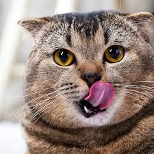

Kucing adalah hewan mamalia yang sering dijadikan hewan peliharaan oleh manusia. Mereka terkenal dengan ciri-ciri seperti bulu halus, kumis yang sensitif, dan cakar tajam.
Ciri fisik kucing meliputi mata besar yang sering kali memiliki warna yang beragam, telinga yang tajam dan bisa bergerak secara independen, serta bulu yang lembut dan seringkali bervariasi dalam warna dan pola. Kucing juga memiliki kemampuan mencuci diri dengan menjilati bulunya menggunakan lidah yang kasar.
Secara umum, kucing dikenal sebagai hewan yang independen namun juga bisa akrab dengan pemiliknya. Mereka dapat mengekspresikan emosi melalui ekor dan telinga, seperti ekor yang tegak menandakan kegembiraan atau rasa antusias, sementara ekor yang gemetar bisa menunjukkan ketegangan atau ketakutan.
Kucing memiliki kepala yang proporsional dengan tubuhnya. Hidung mereka biasanya basah dan hidup, dan mereka memiliki gigi yang tajam untuk memakan makanan mereka, yang sebagian besar adalah daging.